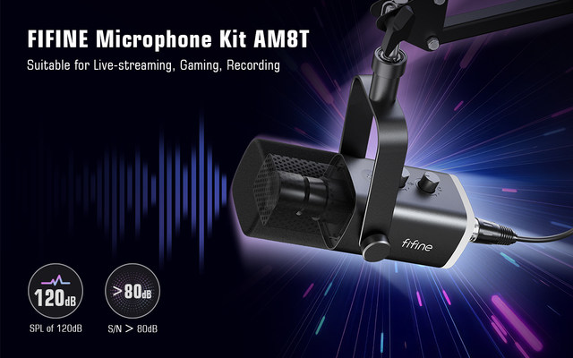
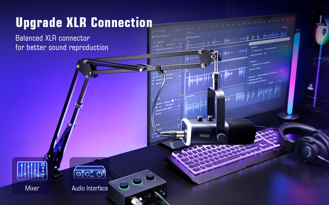
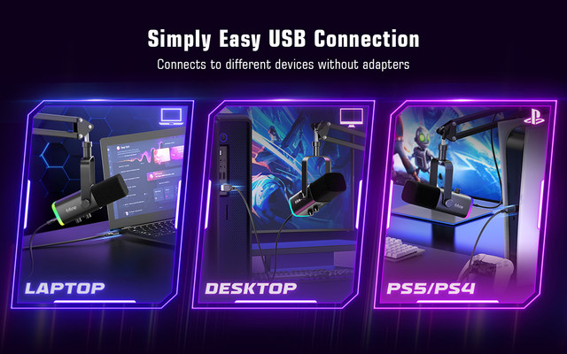
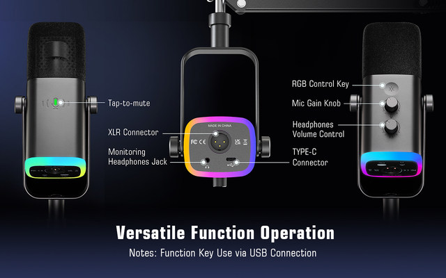
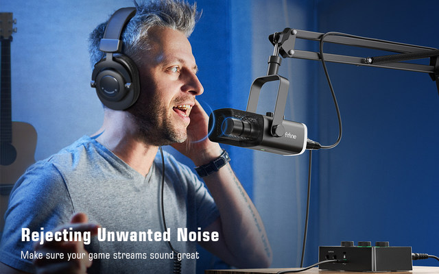
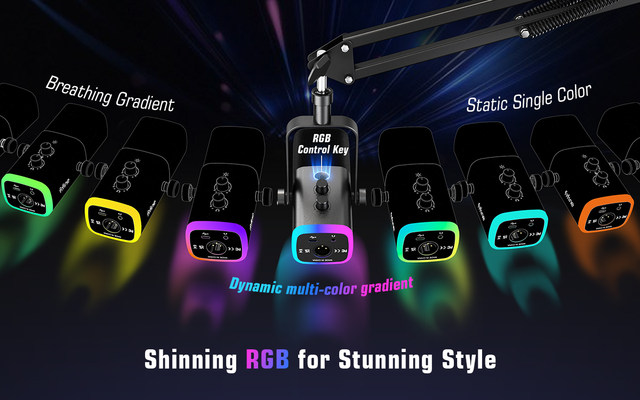
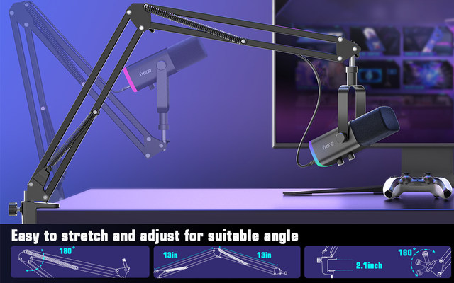
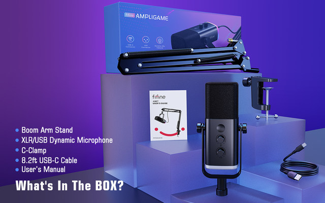

The AM8T USB/XLR microphone is a total game changer for its price! It allows you to switch super-smoothly between XLR and USB connections, which is compatible with Windows, Mac and PS4/5, mixers and other devices. Note: XLR cables are not included


The gain knob design makes it easy to adjust the volume, even while you play. A light touch is all it takes to quickly mute the microphone. Therefore, there is no worried about the ticking noise when you use the light-touch mute and volume knob control.

Not only do you get all of the above mentioned but you also get a 3.5mm built in Jack to live audio monitor which is a huge plus. You may get a better sound as it has been fitted with windproof foam that isolates the audio from ambient noise.

The rich RGB accessories is not too much it's just enough but it looks really good in the diffusing ring it's housed in. With soft and coordinated light effects, your game video or live streaming will be more eye-catching.

The AM8T works best when spoken into the top of it and a boom arm makes it easy to do that. It is easy to stretch and adjust for suitable angles. Giving you a greater possibility to reduce the noise caused by vibration and improving the quality of your recordings.

